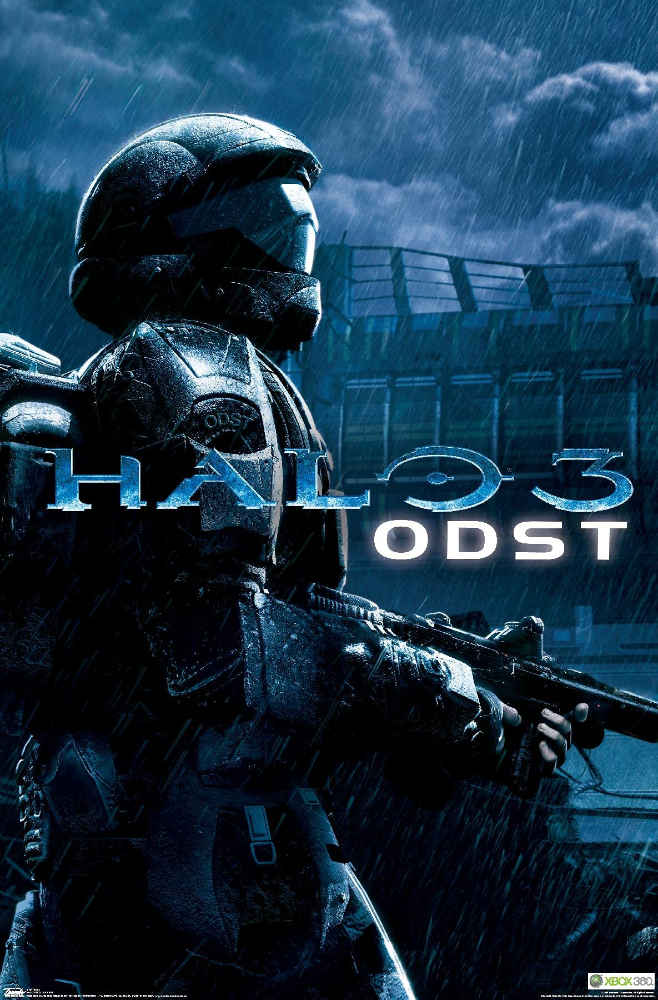

|  | |
| Playtime | Not Played |
| Last Activity | 4/30/2015 15:23:36 |
| Added | 4/24/2025 1:30:35 |
| Modified | 4/30/2025 11:33:02 |
| Completion Status | Not Played |
| Library | Xbox |
| Source | Xbox |
| Platform | Microsoft Xbox 360 |
| Release Date | 9/22/2009 |
| Community Score | 98 |
| Critic Score | 83 |
| User Score | |
| Genre | First-person shooter |
| Developer | Bungie |
| Publisher | Microsoft Game Studios |
| Feature | Multiplayer Single Player |
| Links | Wikipedia Halo 3: ODST at Halo Waypoint IMDb |
| Tag | [People] composer: Martin O'Donnell [People] composer: Michael Salvatori [People] director: Joseph Staten |
Halo 3: ODST is a 2009 first-person shooter video game developed by Bungie and published by Microsoft Game Studios. The fifth installment in the Halo franchise as a side game, it was released on the Xbox 360 in September 2009. Players assume the roles of United Nations Space Command Marines, known as "Orbital Drop Shock Troopers" or ODSTs, during and after the events of Halo 2. In the game's campaign mode, players explore the ruined city of New Mombasa to discover what happened to their missing teammates in the midst of an alien invasion. In the "Firefight" multiplayer option, players battle increasingly difficult waves of enemies to score points and survive as long as possible; Halo 3's multiplayer is contained on a separate disc packaged with ODST.
Bungie initially conceived ODST as a small side project to produce in the lull between Halo 3's completion and Halo: Reach. Instead of featuring recognizable characters such as armored protagonist Master Chief, the developers focused on the ODSTs. Story director Joseph Staten penned a detective story utilizing film noir designs, settings, and characters. Composer Martin O'Donnell abandoned his previous Halo themes to create a quieter, jazz-influenced sound. During development, the planned expansion grew in scope to that of a full-sized game. Release marketing for the game included a tie-in comic, live-action trailers, and print and web advertisements.
Upon release, ODST became the top-selling Xbox 360 game worldwide. The title received generally positive reviews from critics, who praised the atmosphere, music, and story approach. Reviewers were divided on whether the relatively short campaign and included extras were enough to justify the game's US$60 price tag. The game was the top-selling title in the United States in September 2009, and sold more than 3 million copies worldwide. Softpedia, Time, and Wired were among publications that declared the game one of the year's best. The single-player campaign was re-released as downloadable content for the Halo: The Master Chief Collection for Xbox One in May 2015 and was released on PC, also as part of The Master Chief Collection, on September 22, 2020.
Halo 3: ODST is a shooter video game with most gameplay taking place from a first-person perspective. The game features an open world environment in the updated Kenyan city of Mombasa, referred to as New Mombasa. Although the gameplay of ODST bears a strong resemblance to that of previous Halo titles, the player does not assume the role of the enhanced human supersoldier Master Chief, protagonist of Halo 3. Instead, the player controls human soldiers known as "Orbital Drop Shock Troopers" or ODSTs. Since ODSTs do not possess the Master Chief's advanced armor and reflexes, they cannot jump as high, move as fast, or survive large falls. Instead of the Master Chief's damage-absorbing energy shield, the game uses a recharging stamina mechanic. After the player sustains damage, the screen flashes red and the stamina score decreases. If the player receives additional damage before the stamina can recover, the player's health is reduced. Loss of all health causes the player character to die and restart at the last saved checkpoint. Medical packs scattered around the game environment can restore the player's health. The player's head-up display (HUD) includes a "VISR" mode that outlines enemies in red, allies in green, and items of interest in either blue or yellow.
The game's Campaign mode may be played alone or cooperatively with a maximum of three additional players. As a lone human soldier known as "the Rookie," the player's goal is to discover what happened to his missing teammates. After finding a piece of evidence left behind, such as a sniper rifle hanging from a power line, the player will enter a flashback mission, where they assume the role of the missing soldier six hours earlier. After the player has found the first piece of evidence, the choice of where to go next is left open; campaign levels may be played in any order.
In the multiplayer matchmaking, ODST includes Halo 3's multiplayer game modes contained on a separate disc. The offering contains 21 multiplayer maps released for Halo 3 as well as 3 additional maps titled Citadel, Heretic, and Longshore. Along with the Halo 3 maps, ODST includes a version of the Forge map editor—a utility that allows player customizations of multiplayer levels.
ODST contains a cooperative game mode called Firefight, where players take on increasingly difficult waves of enemies in a timed survival game. Firefight can be played cooperatively with up to three other players via networked consoles (System Link) or Microsoft multiplayer service Xbox Live, or up to two players on the same console in splitscreen mode. Players start Firefight with only the Rookie as a playable character; completing the campaign mode unlocks other characters and maps. Players are awarded medals for making special kills, and individual and team scores are tracked throughout the games. Inside Firefight, players have a shared pool of seven lives, which are replenished after completing five rounds. Adding to the difficulty are modifiers called "skulls", which give enemies new abilities or a handicap to the player – the "Catch" skull, for example, causes enemies to throw greater numbers of grenades. Each of the first three rounds in a set activates a different skull. On the fourth set, all skulls are activated and the players must survive 60 seconds.
ODST takes place in the 26th century, when humans under the command of the United Nations Space Command (UNSC) are locked in a war with a theocratic alliance of alien races known as the Covenant. During the events of the 2004 video game Halo 2, the Covenant discover the location of Earth and launch an assault on the city of New Mombasa in Africa. Though the UNSC manages to repel most of the fleet, a large ship hovers over the city, depositing an invasion force. The ship eventually retreats via a slipspace jump, creating a massive shockwave. While the rest of Halo 2's storyline follows the ship to an ancient installation similar to the first Halo, ODST focuses on the aftermath of the shockwave, while the Covenant still occupy the city.
During the game, the player can unlock audio files to an additional narrative called "Sadie's Story", which tells the story of a civilian girl caught in the initial stages of the Covenant invasion and her quest to find her father. The tale can also provide useful information for the player during the game, such as helping to locate hidden caches of weapons.
The game's protagonist is the unnamed Rookie, a new member of a group of Orbital Drop Shock Troopers. Troopers, known as ODSTs or Helljumpers, often deploy in small, one-man Human Entry Vehicles (HEVs), referred to in-game as Single Occupant Exo-Atmospheric Insertion Vehicles (SOEIV), launched from spaceships in the upper atmosphere. The Rookie is assisted in finding his teammates by Mombasa's city maintenance AI, called the Superintendent or Vergil. The Rookie's teammates are Buck, Dutch, Romeo, Mickey, and Dare. The lattermost is a UNSC Office of Naval Intelligence (ONI) agent in charge of the squad's operation.
The game begins with Dutch (Adam Baldwin), Romeo (Nolan North), and Mickey (Alan Tudyk) discussing the Covenant Supercarrier above New Mombasa, with the Rookie asleep nearby. Buck (Nathan Fillion) arrives and introduces Dare (Tricia Helfer). Romeo wakes the Rookie and the team enter their HEVs and drop through the atmosphere; at the last minute, Dare changes their trajectory to miss the ship due to a classified mission she has for the team. The Covenant ship enters slipspace with a UNSC ship that can be seen pulling alongside it, sending a shockwave toward the ODSTs; the Rookie's pod collides with Mickey's and crashes into a building on the ground, knocking him unconscious for six hours. He awakens and proceeds to find clues as to what happened to his squadmates.
Buck makes a rough landing after the drop and fights through Covenant forces to find Dare. However, Dare has vanished without a trace when he arrives at her drop pod, leaving behind only her helmet which is later found by the Rookie. Buck finds Romeo instead and the two resolve to find the others and get out of the city. Dutch drops near a nature preserve and helps Marines fighting there. Mickey commandeers a tank and fights his way along a Mombasa boulevard. Meeting up with Dutch, the two defend an ONI base from the Covenant, destroying the facility to keep it from being captured. They are evacuated by a police dropship and make contact with Buck, arranging a rendezvous at police headquarters, but are shot down. Buck and Romeo rescue Dutch and Mickey, but Romeo is seriously wounded. The squad hijacks a Covenant dropship, but instead of leaving the city, Buck decides to have them turn back and find Dare, having realized that Dare has continued her classified mission on her own.
Back in the city, the Rookie is assisted by the Superintendent Vergil, the city's maintenance AI. The Rookie receives a distress call from Dare and locates her in the city's underground tunnels. The two reach the Superintendent's data core, which possesses information on something the Covenant is looking for underneath the city. Inside the core, they discover a Covenant Engineer that has combined the Superintendent into itself. Dare explains that the Engineers are "biological supercomputers" that have been enslaved by the Covenant, and the one they found wishes to defect to the humans; with the Engineer's information on the Covenant combined with the Superintendent's data, Dare's mission changes from downloading the Superintendent's data to escorting the alien to safety. The Rookie, Dare, and the Engineer reunite with Buck and fight their way out of the city where they reunite with the rest of the squad. As they fly away in the hijacked dropship, the squad watches as Covenant ships destroy New Mombasa and excavate a massive alien artifact.
In the epilogue, one month after the events of the campaign, the ODST squad has been keeping guard over the Engineer. Sergeant Major Avery Johnson arrives, informing the Engineer that he intends to ask it everything it knows about the Covenant—and what they are looking for. Hating the Covenant as much as the humans do, the Engineer lights Johnson's cigar in a sign of agreement. If the campaign is completed on the Legendary difficulty level, a scene shows the Prophet of Truth overseeing the excavation of the Forerunner artifact buried beneath the Superintendent's data core.
Much of ODST's development team started work on director Peter Jackson's Halo Chronicles video game during the production of Halo 3. However, the failure of a Halo film adaptation and the subsequent cancellation of Chronicles meant a sizable team no longer had a project. Around the same time, production for Halo: Reach began, and Bungie realized that there was a window of time for the studio to create a new product, what producer Curtis Creamer described as a two-to-three-hour "mini-campaign". After looking at the proposal and the budget, studio head Harold Ryan gave the go-ahead.
With a game engine already assembled, the team began honing the concept. Bungie was interested in bringing changes to the classical Halo format which had remained essentially unchanged over three games. The developers spent weeks considering which characters they wanted to focus on. Having players control previous protagonists such as the Master Chief or Arbiter would have brought with it story baggage and expectations. At one point, they considered making the game a Covenant-themed story about an elite strike force. Instead, the developers looked at human characters; while they considered Avery Johnson, they settled on the ODSTs. "The ODSTs have always been fan favorites," Bungie community director Brian Jarrard explained. "We never really got inside [the ODSTs]," story director Joseph Staten said, and he saw that game as an opportunity to flesh out the black-armored soldiers.
Making the player an ODST required gameplay changes to preserve the classic Halo gameplay formula while branching it in new directions. The addition of silenced weapons and a revamped pistol were attempts to split the functionality of Halo 2 and Halo 3's "battle rifle" weapon and give the ODSTs unique armaments. The sound designers increased the loudness of the game's submachine gun to make it feel more powerful. The health mechanism was added to provide a level of tension; "it reminds you that you're vulnerable," Staten said.
With the main characters in place, the development team had to decide on a setting. "The events that unfolded on Earth is something fans still clamor for after being 'short changed' in Halo 2," Jarrard said. "Fans wanted to know what happened back on Earth, how humanity was defending it." New Mombasa's urban environments fit the intended feel of the game, as Bungie felt that the change of protagonists required a change in location: "We know the kinds of problems Master Chief solves," Staten explained. "He goes to ancient, alien ring artifacts, fights galaxy-consuming parasitic alien monsters and destroys alien empires [...] The ODST, they maybe take small parts in that larger struggle. But the kind of fights they usually get into are usually the kind of fights they can tackle in a day."
Returning to a previous setting offered the artists new challenges and opportunities to expand the scope of the city. Having the player walk through the streets at night inspired a film noir ambiance. Color shifts and a high degree of contrast pushed the game's look beyond what previous Halo games had offered, but the team had to make sure that even dark portions of the city were playable. The entire core development team looked at commissioned concept paintings to decide how lighting schemes would affect the gameplay. The genre also influenced the character names and archetypes. The player character, for example, fits the concept of a lone, hardboiled detective. To increase the depth of the surroundings, Bungie added touches such as advertisements, trash collectors, and civilian versions of previously seen military hardware.
Bungie began development of ODST in March 2008. ODST was the first Bungie title completed in less than three years, as production lasted 14 months. Since the team—numbering around 70, plus a five-person core design group—had such a small window for development, they had to prioritize features; for example, rather than completely redesigning the enemies, only a small new subset of artificial intelligence behaviors were added. Because the game featured an open world different from most Halo missions, certain gameplay tweaks, such as the revamped weapons and an overhead map, were necessary. Whereas in a traditional Halo game, the designers would know from what locations players would approach groups of enemies, ODST required a different strategy. "We had to make sure we had groups of Covenant patrolling the city who could react from wherever you attack from and look intelligent doing it," Creamer said. Though the game engine remained unchanged, graphical enhancements such as fullscreen shader system and parallax mapping added greater detail and realism.
The Firefight game mode was a late addition to the game. Staffer Tim Williams built a prototype shortly after Halo 3 shipped, placing the player in a portion of a Halo 3 campaign map and fighting enemies. When development commenced on ODST, William's concept was adopted for the game and refined. Designer Lars Bakken described one advantage of the game mode as providing a more friendly multiplayer environment than hardcore players online. The designers reused the campaign scoring and medal system from Halo 3 to add a competitive edge.
Sadie's Story was created by Fourth Wall Studios in partnership with Staten and artist Ashley Wood. Fourth Wall Studios was formed by former members of 42 Entertainment, who produced the highly successful I Love Bees alternate reality game to promote Halo 2. Recalled Staten, "we realized that in Halo we do a pretty good job of describing the clash of these military industrial complexes, but it really is the soldiers' story," and Halo 3: ODST offered a chance to take a look at the unexplored civilian story.
By December 2008, the game was "representational", meaning that players could experience the game from start to finish, albeit in an unfinished state. The entire Bungie staff was pulled from other duties to play through the game and offer feedback. Among the unfinished elements was the lack of finished dialogue delivered by voice actors, in which Staten filled in placeholder audio. The entire game was completed just before its presentation at the Electronic Entertainment Expo 2009.
Bungie's audio director Martin O'Donnell and his partner Michael Salvatori composed the music for ODST. In contrast to Halo's signature Gregorian chant, there is no choral music in ODST, and no previous Halo themes make a return appearance. Two out of the game's three hours of music were packaged in a two-disc soundtrack released September 22, 2009. Due to ODST's shift to a new protagonist, O'Donnell wanted to create new music that was evocative of Halo but branched in a different direction. Because the game tells a "human story, not a cyborg story", O'Donnell said, the score was more "intimate and personal". For the Rookie's rain-slicked investigations, O'Donnell felt that a jazz-influenced approach worked best in echoing the noir atmosphere. Other characters did not have any themes written specifically for them but became paired with motifs that suited them.
O'Donnell began writing the game's music while Bungie was crafting the ODST announcement trailer. O'Donnell based the trailer's music on a small segment from the first ODST piece he wrote, titled "Rain". Salvatori joined the project in February 2009 and helped complete the music chores in two months. Once O'Donnell felt they had enough material, the Chicago-based Salvatori flew to Seattle, Washington, finishing arrangements and recording live musicians. Most of the music was recorded during early 2009. Additional composition chores were handled by Bungie sound designer C. Paul Johnson and orchestrator Stan LePard. The Northwest Sinfonia, which recorded the music for Halo 3, performed orchestral sections at Studio X in Washington.
Members of Bungie were fans of the television series Firefly, and in Halo 3's development brought in several of the actors to fill Marine voice roles. Three of them voiced the four main characters of the ODST squad: Nathan Fillion (a Halo fan himself), Adam Baldwin, and Alan Tudyk. Tricia Helfer provided the voice for the ONI agent Dare; Helfer and Fillion recorded their cinematic dialog together in the same room, a rarity in voice acting. Staten said that "their performances were stronger having them together at the same time". While Staten wrote much of the cinematic dialogue, combat lines could be improvised by the voice actors. Adding Sadie's Story to the game doubled the amount of voice work in the game. After the voice roles were filled, Bungie licensed Fillion and Helfer's likenesses for their respective characters.
In July 2008, Microsoft head of Xbox business Don Mattrick told MTV that Bungie was working on a new Halo game for Microsoft, independent of the franchise spinoffs Halo Wars and Chronicles. An announcement of the new Halo project was expected at the Electronic Entertainment Expo (E3) 2008 trade fair, with Bungie unveiling a countdown on their web site, but the announcement was shelved by Microsoft. Microsoft stated that it wanted the game to have its own event. On September 25, 2008, a year after the release of Halo 3, Bungie debuted a teaser for the new project on their web site. A full trailer was released during the Tokyo Game Show on October 9, 2008, officially unveiling the game's name as Halo 3: Recon and a release date of Autumn 2009. In an unusual approach for Bungie, the trailer used pre-rendered graphics instead of the game engine or existing assets. Staten explained that it was too early in the game's development to spend a large amount of time on the trailer, and it would not have allowed Bungie to add touches for fans to discuss.
In post-trailer interviews, Bungie staff members told gaming press that Recon was the last installment in the Halo trilogy. Though Bungie did not consider Recon a full game, with writer Luke Smith comparing it to WarCraft III expansion The Frozen Throne, the game shipped with all Halo 3 multiplayer maps and did not require Halo 3 to play. Smith asserted the game would not be a crossover into stealth and squad-based genres, noting, "this isn't Brothers in Arms: Halo or Tom Clancy's Splinter Cell: Halo." On November 25, Jarrard announced the game had been retitled to Halo 3: ODST as a "more straightforward" description of the game.
Bungie and Microsoft first showed ODST in a playable form at E3 2009, where the game's release date and retail versions were finalized. Bungie initially marketed ODST as a title smaller in scope than previous numbered entries in the series. When the game's retail versions were announced, however, the game received a standard price of US$60, which Bungie and Microsoft attributed to the game growing beyond the planned scope. "Over the course of development it got a lot bigger than we were anticipating," said Bungie's Lars Bakken. "We thought of it more as an expansion and then it grew well beyond that." Creamer explained that since the development platform was stable, "we were able to create quite a bit more content than we originally thought we would". The game's length increased from original estimates of 3–5 hours to 8–10. The discrepancy was not discussed until E3 2009 when Microsoft decided it was a full game. Unlike the post-launch support for Halo 3, ODST does not have downloadable content.
Halo 3: ODST ships as a two-disc set. The first disc contains the campaign mode as well as the Firefight co-op mode, while the second disc contains the multiplayer mode with the complete set of Halo 3 maps. Owners of the game received an invitation to participate in the Halo: Reach multiplayer beta, which went live on May 3, 2010. Pre-orders included a token to unlock Avery Johnson as a playable character in the Firefight multiplayer mode. This code was included only by certain retailers. A special edition "Collector's Pack" contained the game and a special ODST-branded wireless Xbox 360 controller. Toys "R" Us offered an ODST action figure and a US$20 gift card as a buying incentive.
By April 2009, market research firm OTX reported that ODST was the most highly anticipated video game, a spot it continued to hold in late August. Before its release the title was the top-selling game on Amazon.com based on preorders alone, spending 107 days atop the merchant's top 100 video games and software list. Copies of ODST were sold early in France. Microsoft responded by launching an investigation and threatening to ban any players on Xbox Live playing ODST before its official release; Xbox lead manager Stephen Toulouse later clarified that they would not ban legitimate buyers.
Microsoft prepared what was described as a "mammoth" advertising campaign for the game, with Entertainment Director Stephen McGill affirming that the game "is absolutely a key title to us ... this is the first time we've ever done anything like this, and Halo 3: ODST is a great way to kick it off." Numerous promotional materials were released through Xbox Live, and many more via online and television advertising. Marvel Comics published a limited comic series, Helljumper, featuring ODST's main characters.
A live-action trailer titled The Life was posted on the Internet in September and later used in television spots as part of the promotional material released for the game. Filmed at several locations in Budapest, Hungary, The Life follows an ODST named Tarkov from a military funeral where he is inspired to become a soldier, through training and combat and up to the moment he becomes a leader in battle. The short film was created by advertising agency TAG SF with effects by Asylum, and directed by Rupert Sanders from production company MJZ, who also handled the award-winning Halo 3 "Believe" advertisement. Legacy Effects designed and fabricated props, weapons, armor, and a Covenant Brute costume within two weeks. Bungie supplied 3D geometry that allowed the company to quickly create accurate representations of in-game items, and provided input on the UNSC dress uniforms. The initial cemetery scene was filmed inside the cooling tower of an active nuclear power plant in Budapest, and outside the tower the production team created a mud pit and obstacle course to simulate basic training. Members of the Hungarian special forces served as drill instructors in the training sequence, firing blanks. Finally, filming moved to an abandoned Soviet-era aluminum refinery for the short's final memorial scene. An additional scene was shot there, but did not appear in the final product.
ODST launch events were held around the United States. Bungie and Microsoft sponsored an official launch event at the Experience Music Project and Science Fiction Museum and Hall of Fame in Seattle, Washington. Featured at the event were discussion panels about the series and advance looks at other Halo content such as the anime collection Halo Legends. About 800 fans attended from around 6–11 pm before heading to nearby game stores to get their copy of the game. GameStop held almost 3,700 launch parties across the United States.
On release Halo 3: ODST became the top-selling Xbox 360 game worldwide. More than 2.5 million copies of the game were sold within two weeks of release, totaling more than US$125 million in sales. ODST claimed the overall top spot in UK game sales, becoming the 12th highest sell-through for a single platform title in the market. ODST took the top spot on Australian game charts on release and, after being outsold by FIFA 10 in early October, reclaimed the best seller position. In Japan, where first-person shooters have generally fared poorly, ODST sold 30,000 copies by September 27. ODST sold 1.5 million units during September in the United States, the best-selling title for that month. In October, the game sold 271,000 units in North America (taking sixth place for game sales); Microsoft reported that ODST sold 3 million units worldwide by November. Overall, it was the ninth bestselling game of the year in the United States, one of only two Xbox 360 games to chart. Expecting sales of the game to increase as players wanted to access the Reach beta, UK retailers slashed its price in April 2010.
The remastered campaign of Halo 3: ODST was released as downloadable content for Halo: The Master Chief Collection on May 30, 2015, and was free to all owners of said game that played from launch to December 19, 2014. It is available to purchase separately to those who are not eligible for a free code for the add-on.
Halo 3: ODST garnered generally positive reviews, and holds an average of 83/100 on aggregate web site Metacritic. Time's Lev Grossman wrote ODST was a "milestone" as it proved "Bungie can use the same instrument to play in totally different key," adding to the longevity of the Halo franchise. In contrast, Pete Metzger of the Los Angeles Times wrote that although ODST was a good game with a compelling story, action, and graphics, "the same can be said for nearly every first-person shooter that is released these days" and that ODST failed to raise the bar set by previous Halo games. 1UP.com's Jeremy Parish noted that while ODST had its flaws, its greatest success was bringing together players who preferred either the multiplayer or campaign portions with a game that would satisfy both camps.
Critics were split on whether ODST was worth its price. Official Xbox Magazine critic Ryan McCaffrey confidently wrote that given the campaign, multiplayer mode, and second Halo 3 multiplayer disc, "no one should have any qualms about ODST's value as a [US]$60 offering!" Other critics who judged the title a full game included the staff of Edge Magazine, Parish, and Computer and Video Games' Mike Jackson. Erik Brudvig of IGN did not consider ODST a "true sequel", but more than an expansion, and recommended that those hesitant about buying the game do so. Those who disagreed included Ars Technica's Ben Kuchera, GamesRadar's Charlie Barratt, Eurogamer's Tom Bramwell, and IGN Australia's Narayan Pattison. In The New York Times' Seth Schiesel wrote that "Microsoft Game Studios has overreached in trying to charge the typical retail price for a full game, around [US]$60, for a product that either should cost [US]$40 or have a lot more content for the single-player aspect of the product."
Critics also disagreed sharply regarding whether the game was a large step forward for the series. Parish said that less enemy variety was balanced by changes he considered the most experimental things Bungie had done for years. Edge and Bramwell praised the contrast between the Rookie's nighttime segments and the more fast-paced flashback vignettes. Edge added that while the narrative design was not groundbreaking, it served as a structure for exploring every possible weapon choice and strategy in the series. While Parish considered the ODST's abilities much different from those of the Chief, other critics such as Jackson wrote that the Halo feel was barely changed and that this was not detrimental. Brett Molina of USA Today felt that the game disappointed by not spending more time in the Rookie's open environment; "instead," Molina wrote, "roughly two-thirds of ODST's combat feels very much like a traditional Halo game" instead of exploring new mechanics.
ODST's visuals and atmosphere were praised. McShea wrote that while the Halo 3 engine was showing its age, the game could still "wow" because of the art design. Parish wrote that the feel of Mombasa changed dramatically when played cooperatively; G4TV found that additional players spoiled much of the solitary feel. Travis Moses of GamePro wrote that while the game's graphics were consistently outclassed by other shooters, the game's frame rate remained consistently high as expected from Halo games. Technology company Digital Foundry said that, despite welcome improvements in AI, the main flaws from Halo 3's graphics engine—namely a sub-720p native resolution and lower-quality human faces—remained.
The game's audio and sound were lauded. McCaffrey wrote that while the music of Halo 3 was "too familiar", ODST had freed O'Donnell to "craft his best work yet", which the critic considered good enough for a standalone purchase. A significant departure from the consensus was offered by Kuchera, who wrote that the saxophone touches "[sound] like the softcore porn they show on Cinemax after midnight", and GameSpy's Anthony Gallegos, who felt that the music did not mesh when extended into combat segments.
Firefight was praised as "addictive", especially for showcasing the excellent artificial intelligence of enemies. Jeff Marchiafava of Game Informer credited the enemies with differentiating Firefight from similar game modes in games such as Gears of War 2 or Left 4 Dead, which featured mindless zombies or cannon fodder. The staff of Official Xbox Magazine UK wrote that the gametype's depth and options made Gears of War's comparable mode look "simple" in comparison, and that Firefight extended the life of the game. In contrast, Bramwell felt that in Firefight "there is both a sense of futility in the knowledge that death is only a matter of time and odds, and fatigue in the realisation that many levels play out just as they did in the campaign, except a bit more so".
Interviewed by G4TV, Bungie representatives saw part of the mixed and negative reception as stemming from their own marketing of the title—first as an expansion pack, then a full game. "If you look at the lower scores, they almost all cite an issue in perceived value based on an initial expectation that was set for an 'expansion' and then a feeling that they were overcharged for the final product," Jarrad said, echoing Staten's comment that "if we'd never said the words 'expansion pack' we would have seen an appreciable increase in the review scores". Other elements they wish they had improved had they the time were the pacing and navigation of the nighttime segments and matchmaking for Firefight. Halo manager 343 Industries director Frank O'Connor said that he was glad ODST "didn't take off", in his view, because it allowed people to focus on Reach and its launch and marketing.
Lev Grossman and Peter Ha ranked ODST as the eighth best game of the year for Time, lauding the game as "a dark, slow, jazzy, hard-boiled take on the Halo world". Softpedia branded ODST the best first-person shooter of the year; games editor Andrei Dumitrescu wrote that while the game occasionally felt formulaic, it was bolstered by a good plot, great music, and supporting characters that players could care about. Chris Kohler from Wired ranked ODST as the third best Xbox 360 title of the year, writing that the game "injected a fresh breath into the staid corridors of Bungie's shooter franchise".
Halo 3: ODST won "Best Original Score" at the 2009 Spike Video Game Awards. "The Life" was awarded "Outstanding Visual Effects in a Video Game Trailer" by the Visual Effects Society at the group's 8th annual awards.